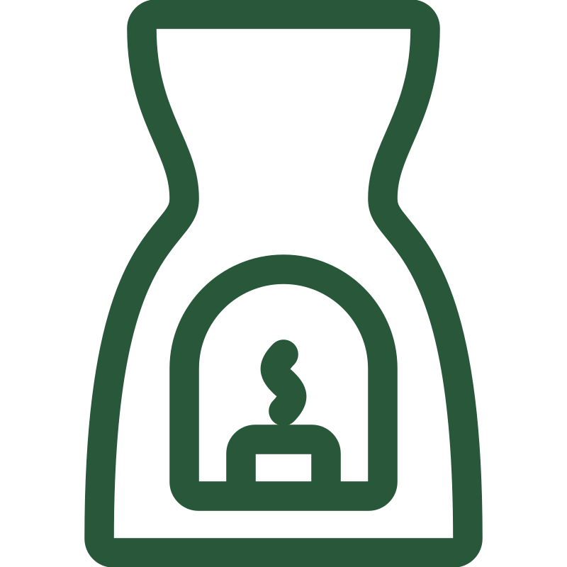

Relaxation Massage
Relaxation massage is a gentle, Swedish-style treatment focused on calming the body and mind. It uses light pressure and slow, steady strokes to promote relaxation. This type of massage is not intended to treat chronic muscle pain or deep tension. Its main goal is to help you unwind and feel at ease.
Thai Massage
Thai Massage combines gentle stretching, traditional Thai techniques, and light to medium pressure to target pain, soreness, and tightness in specific areas. This treatment improves flexibility, relieves tension, and promotes deep relaxation. It’s designed to support both physical recovery and overall well-being.
Cupping Therapy
Cupping with massage helps boost circulation, reduce muscle tightness, decrease pain and inflammation, and improve mobility and range of motion. The therapist focuses on the affected area using deep tissue techniques, leaving the cups in place for 5 to 15 minutes. Stretching is also incorporated to further enhance flexibility and movement.
Pregnancy Massage
Therapy specifically tailored for the expectant mother's needs. Light pressure and focus on relaxation.
Therapeutic Massage
Therapeutic massage uses light to medium pressure to target muscle tightness and pain. The therapist starts gently, increasing pressure as needed to work deep into soft tissues. This helps improve circulation and encourages relaxation. For lasting results, a follow-up session in two to three weeks is recommended.
Deep Tissue Massage
Deep tissue massage targets deeper muscle layers to relieve tension, improve mobility, and support pain management. It's especially helpful for chronic back pain, tight muscles, and sports-related injuries.